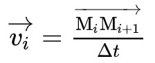
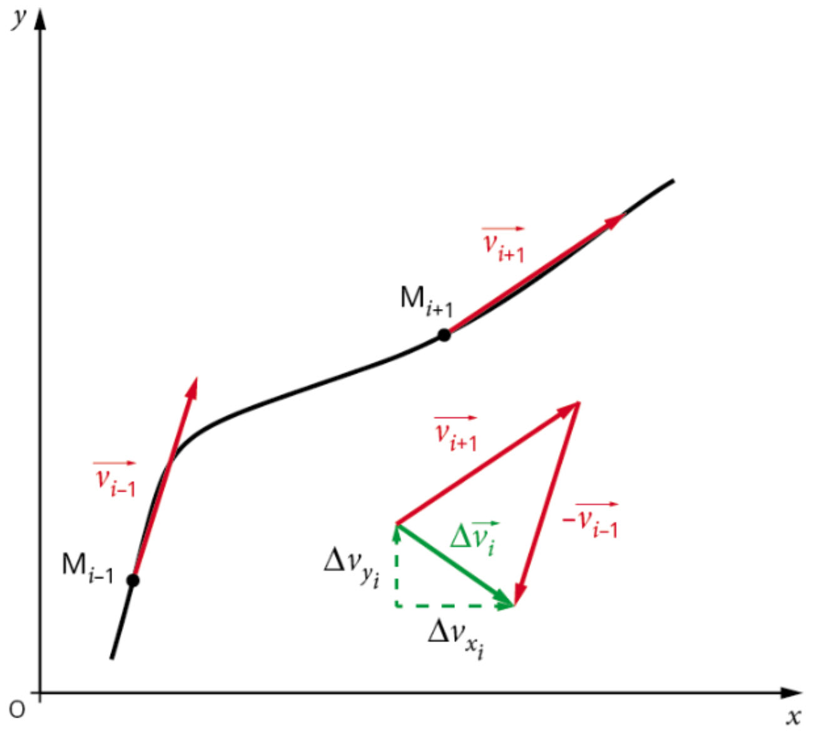
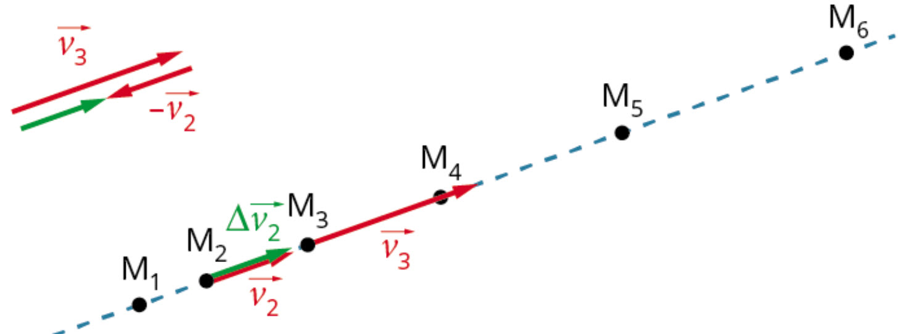
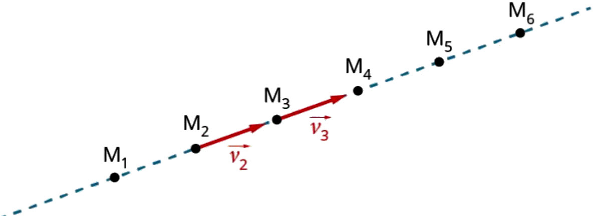
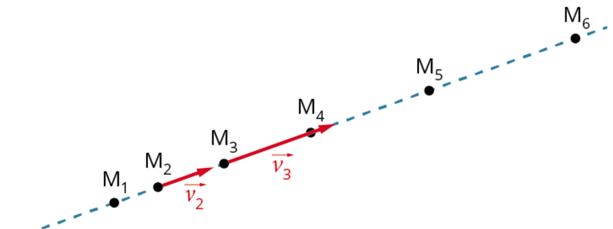
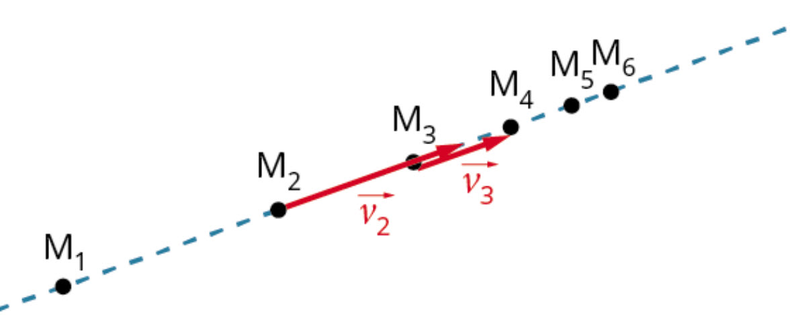
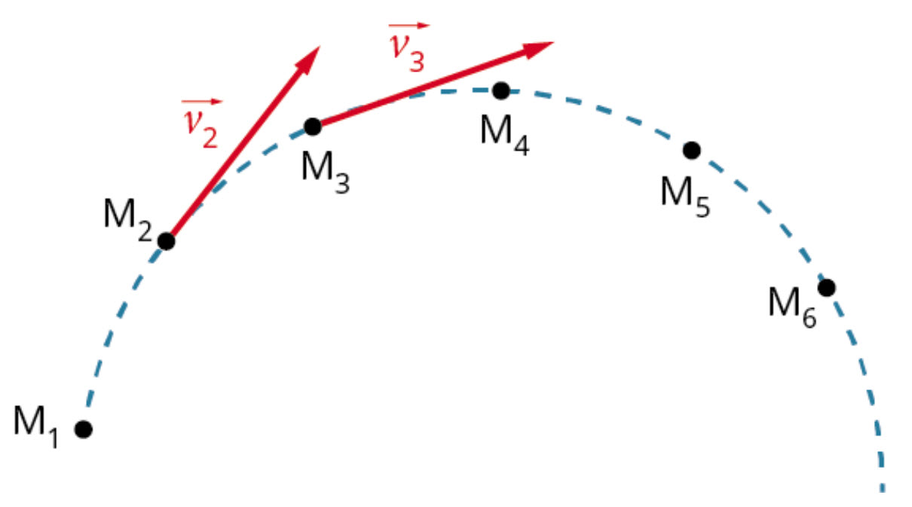
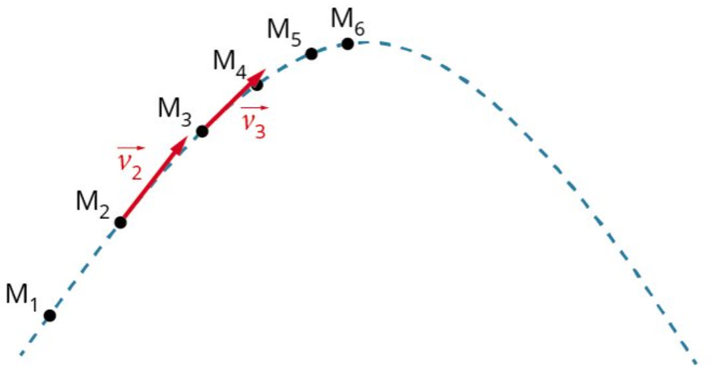

Le système est considéré ponctuel. Dans un référentiel donné, si on décompose la trajectoire d'un point en une succession de positions à intervalles de temps réguliers Δt : M0, M1, M2, …, Mi-1, Mi, Mi+1, on peut construire le vecteur vitesse vi au point Mi à partir du vecteur déplacement Mi-1Mi+1 sur une durée 2Δt.

- Direction : celle de la tangente à la trajectoire au point Mi (approchée par la droite (Mi-1Mi+1)).
- Sens : celui du mouvement.
- Valeur (norme) : ‖vi‖ = Mi-1Mi+1 / 2Δt, en m·s⁻¹.
- Point d'application : Mi.
Tous les points de la chronophotographie sont affichés. Clique et fais glisser le vecteur directement sur le canvas (ou utilise le curseur) pour le faire avancer point par point. Il est nommé automatiquement selon sa position (v1, v2, v3…), avec les points Mk-1 et Mk+1 qui l'encadrent.
Pour traduire la variation de la vitesse en un point Mi, on construit le vecteur variation de vitesse Δvi au point Mi, en l'encadrant par les points Mi-1 et Mi+1. Il est défini par la relation :

Construction générale du vecteur variation de vitesse
Exemple sur un mouvement rectiligne accéléréChoisis une situation, puis avance étape par étape pour voir comment on construit Δvi : on déplace vi+1 à une origine commune, on inverse vi-1, puis on le place à sa pointe.
- Dans les 4 situations proposées, vi-1 et vi+1 ne sont jamais colinéaires : le mouvement est toujours curviligne.
- Plus l'écart angulaire entre les deux vitesses est grand (virage plus serré), plus Δvi s'écarte de la direction de v.
- Δvi pointe toujours vers l'intérieur du virage, que la norme augmente, diminue ou reste constante.
Le vecteur Δvi renseigne directement sur la nature du mouvement. Clique sur la bonne réponse pour chacune des situations suivantes.

👉 Choisis la bonne réponse :

👉 Choisis la bonne réponse :

👉 Choisis la bonne réponse :

👉 Choisis la bonne réponse :

👉 Choisis la bonne réponse :
- Δv = 0 ⟺ mouvement rectiligne uniforme.
- Δv colinéaire à v ⟺ mouvement rectiligne (accéléré ou décéléré selon le sens de Δv).
- Δv non colinéaire à v ⟺ mouvement curviligne ; Δv est alors dirigé vers l'intérieur de la courbe.
D'après le principe d'inertie (vu en seconde), si la variation du vecteur vitesse est nulle, alors la somme des forces qui modélisent les actions mécaniques s'exerçant sur le système est nulle. La réciproque est vraie.
D'après la contraposée du principe d'inertie, si la variation du vecteur vitesse est non nulle, alors la somme des forces est non nulle. La réciproque est également vraie.
Le vecteur variation de vitesse Δvi, construit à partir de deux vecteurs vitesse voisins au point Mi, a une direction et un sens particuliers. Le vecteur somme des forces ΣF a même direction et même sens que Δvi. Sa valeur est proportionnelle à la variation de vitesse.
Dans un référentiel donné, si un système de masse m constante est soumis à une ou plusieurs forces, le vecteur variation de vitesse Δv de ce système pendant une durée très courte Δt et la somme des forces ΣF sont reliés — de façon approchée, valable pour Δt petit — par la relation suivante :
Ces deux vecteurs ΣF et Δv sont colinéaires, de même sens.
Plus la masse d'un système est grande, plus il est difficile de modifier son mouvement : la force qui modélise l'action requise pour modifier la vitesse d'un système est proportionnelle à sa masse. Fais varier la masse ci-dessous, pour une même force appliquée pendant la même durée Δt, et observe l'effet sur Δv.
📝 Application directe — Relation approchée
| t (s) | 0,00 | 0,10 | 0,20 | 0,30 | 0,40 | 0,50 | 0,60 | 0,70 | 0,80 | 0,90 | 1,0 | 1,1 | 1,2 |
|---|---|---|---|---|---|---|---|---|---|---|---|---|---|
| v (m·s⁻¹) | 12,5 | 11,6 | 10,6 | 9,61 | 8,63 | 7,65 | 6,67 | 5,69 | 4,71 | 3,73 | 2,75 | 1,77 | 0,79 |
| t (s) | 0,00 | 0,10 | 0,20 | 0,30 | 0,40 | 0,50 | 0,60 | 0,70 | 0,80 | 0,90 | 1,0 | 1,1 | 1,2 |
|---|---|---|---|---|---|---|---|---|---|---|---|---|---|
| v (m·s⁻¹) | 0,0 | 1,00 | 2,00 | 2,94 | 3,92 | 4,90 | 5,88 | 6,86 | 7,84 | 8,82 | 9,80 | 10,8 | 11,8 |
Choisis la phase, lance l'animation pour voir les positions apparaître les unes après les autres, puis utilise le curseur pour choisir un point Mi et observer la construction du vecteur Δvi = vi − vi-1 à partir des vitesses mesurées aux points encadrants. (Vecteurs représentés côte à côte pour la lisibilité : ils sont en réalité tous verticaux, colinéaires.)
En M9 (descente) : v8,y = −6,86 m·s⁻¹ ; v9,y = −7,84 m·s⁻¹, donc Δv9,y = −7,84 − (−6,86) = −0,98 ≈ −1,0 m·s⁻¹.
Dans les deux cas, Δvy est négatif et quasi constant (≈ −1,0 m·s⁻¹ tous les 0,100 s) : le vecteur Δv pointe donc toujours dans le sens contraire de Oy, c'est-à-dire vers le bas, aussi bien en montée qu'en descente.
- Une balle de squash (masse m = 24 g) est lancée en l'air selon une direction oblique ; elle n'est quasiment soumise qu'à son poids.
- La caméra filme le mouvement dans un plan vertical, à raison de ≈ 49 images/s (soit Δt ≈ 20,0 ms entre deux images), avec un étalon de longueur (30 cm) visible dans le champ.
- Le logiciel de pointage (Avimeca) permet de repérer, image par image, la position du centre de la balle : on obtient les points M0, M1, M2, … M22.
- Les coordonnées (x, y) de chaque point sont exportées vers un tableur (ou LatisPro/Regressi) pour calculer les coordonnées des vecteurs vitesse puis variation de vitesse.
Extrait des points relevés (tableau complet des 23 points disponible ci-dessous).
📋 Voir le tableau complet (23 points M₀ → M₂₂)
Trajectoire y(x) — échelle verticale dilatée ×2 pour la lisibilité
x(t) en bleu, y(t) en rouge
vx(t) en violet, vy(t) en vert
Δvx(t) en violet, Δvy(t) en orange (traits pointillés = modèle constant)

📝 FCR — Calcul de Δvy entre M₁₄ et M₁₅
📝 FCR — Teste la relation approchée sur tes données
Aux incertitudes de pointage près (écart d'environ 10 % entre les deux valeurs, tout à fait raisonnable compte tenu de la précision millimétrique du pointage), m·Δv/Δt et P ont bien la même direction (verticale), le même sens (vers le bas) et des normes très proches. Cette activité expérimentale confirme donc, sur un cas réel, la relation approchée ΣF ≈ m·Δv/Δt étudiée en cours : si l'on connaît le poids d'un système, on peut prédire le vecteur variation de vitesse, donc construire les vecteurs vitesse successifs, donc les positions successives du système.
On applique la même force ΣF, pendant la même durée Δt, à deux systèmes de masses différentes, tous deux initialement immobiles.
Un satellite décrit une trajectoire circulaire de rayon R autour de la Terre, à vitesse de valeur constante (mouvement circulaire uniforme, MCU). On souhaite représenter, en plusieurs points de la trajectoire, les vecteurs vitesse et les vecteurs variation de vitesse Δv, pour vérifier leur direction.
___) pour calculer les vecteurs vitesse en 3 points voisins d'un satellite en MCU, puis le vecteur Δv au point central, et vérifier sa direction. Clique sur ▶ Exécuter.- 1️⃣ Un ballon de basket sur la Lune — Principe d'inertie
- 2️⃣ Étude d'un mouvement plan — Retrouver les lois de la mécanique
- 4️⃣ Chute libre — La masse intervient-elle sur la durée de la chute ?
- 6️⃣ Tee shot — Étude chronophotographique du mouvement d'une balle de golf
- 3️⃣ La balle de golf — Peut-on négliger le frottement de l'air ?
- 5️⃣ La pesanteur sur Mars — Détermination du champ de pesanteur
📝 Exercice 1 — Lecture de vecteurs
📝 Exercice 2 — Calcul direct
📝 Exercice 1 — Décomposition de Δv
Δvx = 2,5 − 2,0 = 0,5 m·s⁻¹ · Δvy = 2,2 − 1,0 = 1,2 m·s⁻¹
📝 Exercice 2 — Estimer une masse
📝 Exercice — Skieur freinant (problème à étapes)
Δv = 9,0 − 12,0 = −3,0 m·s⁻¹ (le mouvement ralentit) ; on utilise |Δv| = 3,0 m·s⁻¹ pour la norme de la force.
🎉 Accès autorisé !
Bravo, tu as retrouvé les trois chiffres en reliant Δv, ΣF, m et Δt. Le laboratoire de chronophotographie est de nouveau accessible.
Vecteur vitesse
- vi = Mi-1Mi+1 / 2Δt
- Direction : tangente à la trajectoire en Mi
- Sens : celui du mouvement
Vecteur variation de vitesse
- Δvi = vi+1 − vi-1
- Construction par la méthode du triangle (somme avec l'opposé)
- Δv = 0 ⟺ mouvement rectiligne uniforme
Relation approchée
- ΣF = m × Δv / Δt
- ΣF et Δv colinéaires, même sens
- Approche de la 2e loi de Newton (vue en Terminale)
Rôle de la masse
- À ΣF et Δt fixés, Δv est inversement proportionnel à m
- La masse mesure l'inertie du système
- Plus m est grande, plus il est difficile de modifier le mouvement
- Estimer une variation de vitesse à partir des forces appliquées (connues).
- Estimer les forces appliquées à partir du comportement cinématique (Δv connu).
- Réaliser et exploiter une vidéo/chronophotographie pour construire les vecteurs Δv.
- Tester la relation approchée entre Δv et ΣF.
- Utiliser un langage de programmation pour étudier cette relation.
- Sommer et soustraire des vecteurs.
- Vecteur vitesse
- Vecteur caractérisant le mouvement d'un point à un instant donné ; direction tangente à la trajectoire, sens du mouvement, valeur en m·s⁻¹.
- Vecteur variation de vitesse (Δv)
- Vecteur défini par Δvi = vi+1 − vi-1, traduisant la façon dont le vecteur vitesse évolue entre deux instants voisins.
- Chronophotographie
- Ensemble de positions successives d'un système en mouvement, relevées à intervalles de temps réguliers Δt.
- Principe d'inertie
- Si la variation du vecteur vitesse d'un système est nulle, alors la somme des forces qui s'exercent sur lui est nulle (et réciproquement).
- Contraposée (du principe d'inertie)
- Si la variation du vecteur vitesse est non nulle, alors la somme des forces appliquées est non nulle (et réciproquement).
- Relation approchée
- ΣF = m×Δv/Δt : relation reliant, pour une durée Δt très courte, la somme des forces appliquées à un système et la variation de son vecteur vitesse.
- Mouvement rectiligne
- Mouvement dont la trajectoire est une droite ; le vecteur vitesse garde une direction constante.
- Mouvement curviligne
- Mouvement dont la trajectoire n'est pas une droite ; la direction du vecteur vitesse change au cours du temps.
- Mouvement uniforme
- Mouvement pour lequel la valeur (norme) du vecteur vitesse reste constante.
- Mouvement accéléré
- Mouvement pour lequel la valeur du vecteur vitesse augmente au cours du temps.
- Mouvement décéléré (retardé)
- Mouvement pour lequel la valeur du vecteur vitesse diminue au cours du temps.
- Inertie
- Propriété d'un système, liée à sa masse, à s'opposer à toute modification de son vecteur vitesse sous l'effet d'une force.
- Centripète
- Qualifie un vecteur (ici Δv, puis ΣF) dirigé vers le centre de la trajectoire, typique d'un mouvement circulaire.
- Référentiel
- Solide (ou ensemble de points) par rapport auquel on étudie le mouvement d'un système, associé à une horloge pour mesurer le temps.
- Système
- Objet ou ensemble d'objets dont on étudie le mouvement, modélisé ici par un point matériel.
🎬 L'essentiel — Mouvement et forces
Hatier · 2 min 09
- 🖥️ PCCL — Approcher le vecteur vitesse à l'aide du vecteur déplacement (chronophotographie)
- 🖥️ PCCL — Tracer / représenter un vecteur vitesse (vi = Mi-1Mi+1/2Δt)
- 🖥️ PCCL — Variation du vecteur vitesse entre deux instants voisins et lien avec la somme des forces
- 🖥️ PCCL — Variation du vecteur vitesse sur un intervalle 2Δt et action extérieure
- 🖥️ PCCL — Chronophotographie d'un mouvement accéléré
- 🖥️ PhET (Colorado) — Addition de vecteurs, en français
- 🖥️ Ostralo — Animation du principe d'inertie (rappel de seconde)
Pour t'entraîner davantage, retrouve tous les exercices détaillés (avec correction pas à pas) dans l'onglet ✏️ Exercices.